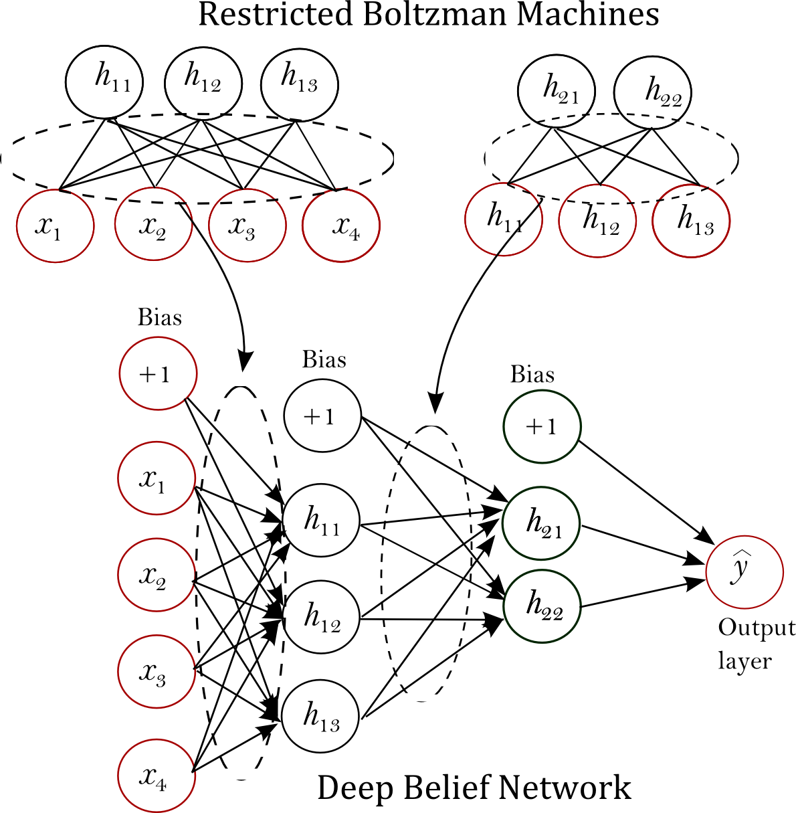
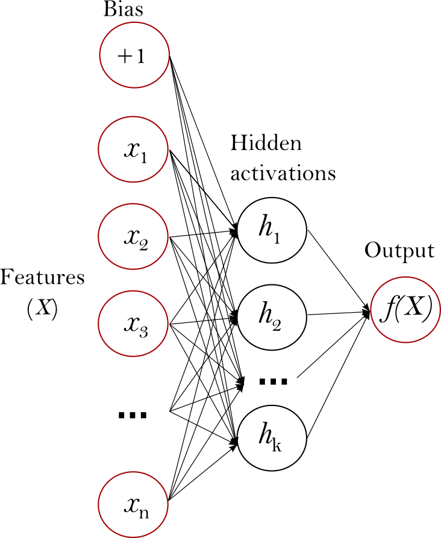
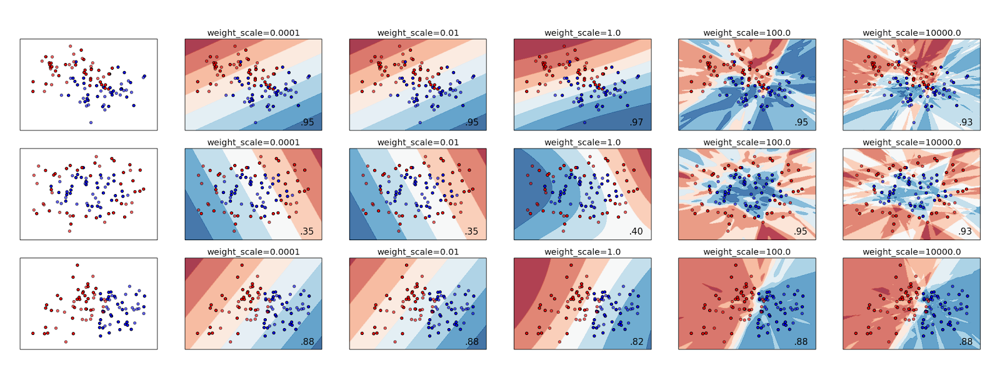
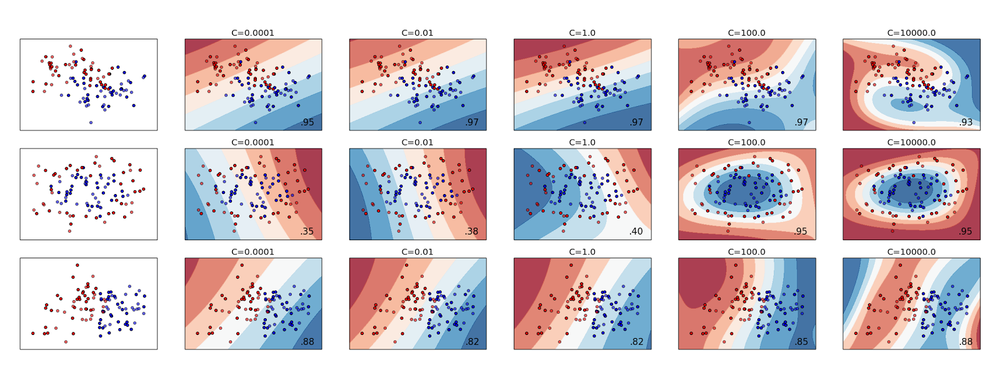
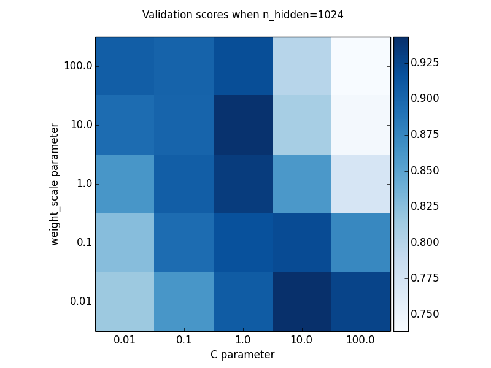

Final Summary (Neural Networks)
GSoC 2014 has been an extraordinary experience. Not only did it encourage me to develop much needed open-source implementation of neural network algorithms, but also exposed me to a great, diverse community. I also learned useful practices for maintaining clean, quality code and writing accessible documentation. This prepared me to work well, and efficiently under pressure, since quality work had to be produced in a short period of time.
In terms of the requirements, the three algorithms mentioned in the proposal - (1) Multi-layer perceptron, (2) Multi-layer perceptron with pre-training, and (3) Extreme Learning Machines - are completed (see below for a comprehansive description). In terms of specific requirements, there has been a lot of changes in order to accommodate positive suggestions, especially for MLP, and ELM. While a part of MLP was completed prior to the start of GSoC, the code went through a complete renovation, which made it faster, more readable, more scalable, and more robust. In fact, most of the work involved was optimizing the speed of execution, improving readability - this includes proper naming and convenient infrastructure of the code base, and writing a comprehensive documentation. The algorithms are explained in more detail below.
Acknowledgements This wouldn't have been possible without the profound, sincere assistance of my mentor Olivier Grisel, and the scikit-learn team - including, Arnaud Joly, Gael Varoquaux, Kyle Kastner, Jnothman, Lars Buitinck, and many more. I sincerely thank the PSA team for emphasizing on summarizing my work as blog posts here and I do greatly appreciate Google's significant support it offered, which was instrumental in the successful completion of this project.
(1) Multi-layer perceptron (MLP) (link: #3204)

This implements the classic backpropagation algorithm supporting one or more hidden layers (see Figure 1). Depending on the problem type (classification or regression), backpropagation optimizes an objective function whose main purpose is to have the predicted output as close to the target as possible, though subject to some constraints like regularization.
The MLP supports L2 regularization which controls the degree to which it is overfitting. Increased regularization constrains the trained weights to be of smaller value which makes the decision function more linear.
We also added a renowned activation function known as rectified linear unit (ReLU) function, which not only is faster, but allows training more than one hidden layer efficiently, at least more than hyperbolic tan and logistic [1].
Unit testing was made thorough as 99.17% of the statements were covered. A gradient unit test helped make sure the activation functions - hyperbolic tan, logistic, and ReLU - work as expected.
After the mid-term, much of the code was renovated. Many methods were combined to simplify the code and improve readability. Performance was improved by removing redundant calls and taking advantage of pre-allocation of matrices - including, values of activation layers, gradients, and weights. Many private variables were removed, making pickling less prone to error and less dense.
MLP might benefit from a scheme known as pre-training which is explained in section 2.
(2) Multi-layer perceptron with pre-training (link: #3281 )

Prior to running backpropagation, an unsupervised learner can provide the MLP with initial weights that might be better than randomized weights. The parameters optimized by the unsupervised learner - after training on the dataset - can be assigned to the MLP weight parameters as starting points.
The motivation is that these initial weights are meant to allow backpropagation to converge in a better local optima than otherwise [2].
Figure 2 illustrates the scheme of using pre-training with multi-layer perceptron. For each set of weights between two layers, a restricted boltzmann machine (RBMs) trains on the input data of the previous layer and the final parameters are assigned to these set of weights in the large multi-layer perceptron.
An example was set to compare the performance of multi-layer perceptron (MLP) with and without pre-training using RBMs [3]. MLP without pre-training had its parameters initialized using scaled, random distribution. For pre-training, an RBM trains on the digits dataset and the resultant parameters are given to MLP as initial coefficient and intercept parameters. Below are the testing scores against the digits dataset [4],
Testing accuracy of mlp without pretraining: 0.967 Testing accuracy of mlp with pretraining: 0.978
However, it is not always the case that pretraining improves performance. In some occasions, especially when dealing with large training sets, it could even decrease the score.
(3) Extreme Learning Machines (link: #3306)

The main focus after the mid-term evaluations was on developing extreme learning machines (ELMs). First we implemented the standard algorithm of ELMs that optimize an objective function using least-square solutions.
An ELM has a similar network as a one hidden layer MLP, except the output layer has no bias (see Figure 3). ELM, basically, trains a network through these 3 steps,
it applies a random projection to the input space, onto a possibly higher dimensional space; the result passes through an element-wise non-linear activation function, typically a sigmoid such as the tanh, and logistic functions; and last, it trains a linear one vs. rest classifier or a multi-output ridge regression model.
The algorithm trains a single-hidden layer feedforward network by computing the hidden layer values using randomized parameters, then solving for the output weights using least-square solutions. For prediction, after computing the forward pass, the continuous output values pass through a gate function converting them to integers that represent classes. The function representing ELM is given as, $y=\beta\cdot f(W^T \cdot X + b ) $
where matrices $X$ and $y$ represent the input samples and target values, respectively; matrices $W$ and $b$ are randomly generated based on a uniform distribution; matrix $\beta$ contains unknown variables; and $f(\cdot)$ is the non-linear, component-wise activation function. ELM solves for $\beta$ using the ridge regression implementation, given as, $(H^T H + (1 / C) * I)^{-1} H^T y$ where $H = f(W^TX+b)$, $C$ is a regularization term which controls the linearity of the decision function, and $I$ is the identity matrix. We demonstrated the effects of tuning two main hyperparameters, weight_scale, which controls the variance of the random projection weights, the higher the value the more the less the regularization and therefore more overfitting. C, which controls the regularization strength of the output linear model, which regularizes the hidden-to-output weights in the same way as weight_scale regularizes the input-to-hidden weights.
and another main hyperparameter, n_hidden, which controls the number of hidden layer nodes.
Below are 3 plots that illustrate the effect of these parameters on score,



Figures 4 and 5 show how increasing the regularization terms C would lead to a more non-linear decision function.
Figure 6 shows a colour map representing scores returned by grid-search illustrating the fact that a balance between C and weight_scale is important to have a higher score. C=1.0 and weight_scale=10 achieved the highest score as indicated by the darkest shade of the relevant blue square.
We re-used ridge regression [5] implementation for solving the least-square solution as it optimizes training speed for different data types. Next, we implemented the sequential algorithm of the ELM. It allows ELM to train on the dataset in batches, while, interestingly, the end result is exactly the same as though the whole dataset is put into memory. However, decreasing the size of the batches, can potentially increase training time. Below is a benchmark showing the training time in seconds of training ELMs with different batch sizes on a 10000 image MNIST dataset.
batch_size 50 hidden neurons 500 hidden neurons
None 0.32s 2.21s
10 0.71s 13.62s
100 0.33s 3.30s
1000 0.32s 2.44s
batch_size=None means that the whole dataset is put into memory. As shown in the benchmark, Training on larger batch sizes improves speed but could cause memory error if the batch size is too large. Nevertheless, using batches the algorithm supports on-line learning and therefore it can update its solutions as the data arrives in chunks.
Also, support for kernel was added to ELM, which was later removed for reasons that will soon appear. ELM originally transforms the input data into hidden activations depending on the number of hidden neurons. Similarly, kernels, like in SVM, transform the input data into another dimensional space where hidden neurons play no role. Empirically, kernels were found to be slow, yet lead to no accuracy improvement over the standard ELM. For that reason and to avoid feature creep, we removed kernel support.
However, we added support of the ReLU activation function, hyperbolic tan, and logistic. They were put in an external file so that they can be shared between different modules in scikit-learn .
Further, we updated another file [6] that is responsible for assigning class weights, useful for several algorithms that support weighted classification. We added method that computes the weights corresponding to each sample as a vector to allow ridge-regression to run weighted least-square solutions in the ELM.
We also improved testing coverage. ELM has a coverage of 100% of the code, making it reliable. Testings were made to make sure, that weighted ELM does improve results in instances of imbalanced datasets; that higher number of hidden neurons does improve the training score; and that whether the algorithm runs using batch-based or not should produce the same end result.
To conclude, this experience was special and useful in that it brought me closer to the scikit-learn community and other open-source communities. It also encouraged me to satisfy my long ambition of implementing useful algorithms and writing accessible documentation for any user who wish to delve into the world of neural networks.
I sincerely look forward to continue working with the scikit-learn team for the years to come and I sincerely look forward to participating in GSoC 2015, either as a mentor or as a student.
References
[1] Maas, Andrew L., Awni Y. Hannun, and Andrew Y. Ng. "Rectifier nonlinearities improve neural network acoustic models." ICML Workshop on Deep Learning for Audio, Speech, and Language Processing. 2013.
[2] Hinton, Geoffrey E., and Ruslan R. Salakhutdinov. "Reducing the dimensionality of data with neural networks." Science 313.5786 (2006): 504-507.
[3] https://github.com/IssamLaradji/scikit-learn/blob/mlp-with-pretraining/examples/neural_network/mlp_with_pretraining.py
[4] http://scikit-learn.org/stable/auto_examples/datasets/plot_digits_last_image.html
[5] http://scikit-learn.org/stable/modules/generated/sklearn.linear_model.Ridge.html
[6] https://github.com/IssamLaradji/scikit-learn/blob/Extreme-Learning-Machines/sklearn/utils/class_weight.py PR References
1) Multi-layer perceptron: https://github.com/scikit-learn/scikit-learn/pull/3204
2) Multi-layer perceptron with pre-training: https://github.com/scikit-learn/scikit-learn/pull/3281
3) Extreme learning machines: https://github.com/scikit-learn/scikit-learn/pull/3306
Comments
There are no comments yet.
comments powered by Disqus